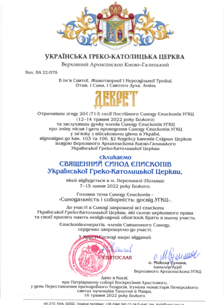

Декрет про скликання Єпископів УГКЦ 2022 року

18 травня 2022
Опис документу Опис документу Опис Опис документу Опис документу Опис ОписОпис документу Опис документу ОписОпис документу Опис документу ОписОпис документу Опис документу ОписОпис документу Опис документу ОписОпис документу Опис документу ОписОпис документу Опис документу ОписОпис документу Опис документу ОписОпис документу Опис документу ОписОпис документу Опис документу ОписОпис документу Опис документу
Завантажити PDF
Пошук
Трансляції
Розклад трансляцій
богослужінь та літургій